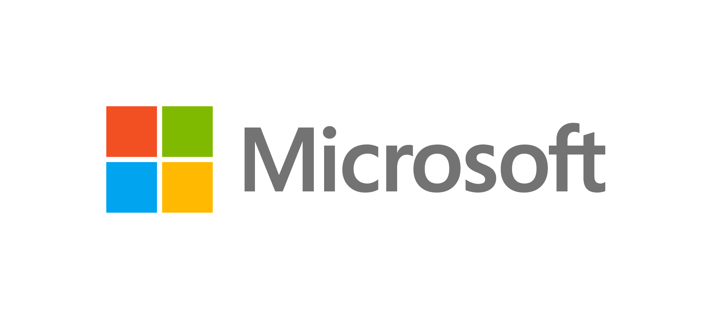
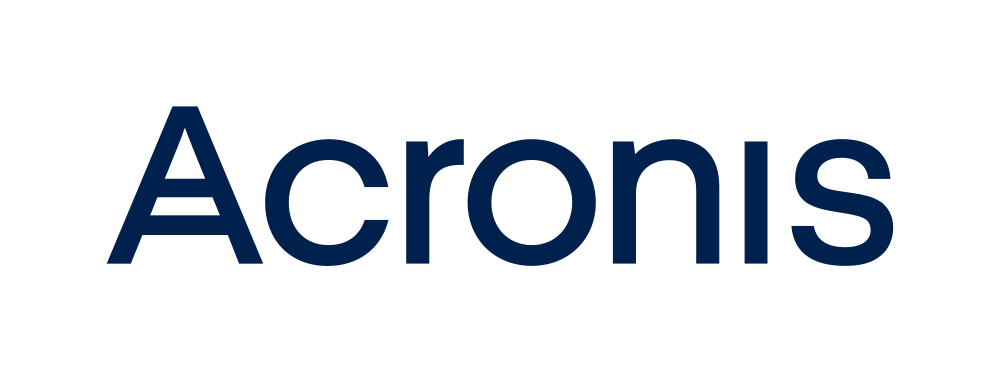

Dal 2000 · Novellara (RE)
L'informatica
al tuo servizio.
Sviluppo software su misura, reti sicure e consulenza informatica e privacy per la tua azienda. Oltre venticinque anni di esperienza al fianco delle imprese, con soluzioni concrete e un supporto sempre raggiungibile.
25+ anni di attività Software su misura Reti sicure & privacy
Rivenditori e partner di canale
-

Rivenditore - Dell Technologies Authorized Partner
- WatchGuard® Partner WatchGuardONE
-

Service provider - Lenovo Business Partner
L'Azienda
Un partner informatico, non un semplice fornitore.
F.R. di Busato Fausto è un'impresa individuale nata nel marzo 2000 in provincia di Reggio Emilia. Il titolare, Fausto Busato, lavora in ambito informatico dal 1996 al fianco di aziende del territorio.
Negli anni l'attività si è ampliata: consulenza per l'acquisto di prodotti informatici, realizzazione di reti, pagine web, software personalizzato e soluzioni AI su misura.
Oggi, anche grazie a diverse collaborazioni, siamo in grado di affiancare il cliente in un mondo — quello informatico — in continua evoluzione, individuando le soluzioni più consone al suo modo di lavorare.
Prodotti e Servizi
Tutto ciò che serve alla tua infrastruttura.
Dall'assistenza quotidiana allo sviluppo di soluzioni su misura: un unico interlocutore che segue a 360 gradi l'informatica, la sicurezza e la conformità della tua azienda.
Sviluppo Software
Gestionali, automazioni, applicazioni web, soluzioni cloud e di intelligenza artificiale (AI): software su misura progettato attorno al tuo modo di lavorare, dall'analisi dei requisiti fino all'implementazione.
Scopri i progetti → In evidenzaConsulenza e Assistenza
Individuiamo con te le soluzioni più consone alle tue esigenze e ti seguiamo nella loro realizzazione, con interventi rapidi anche in assistenza remota.
Scopri di più → In evidenzaFornitura Hardware e Software
Dopo un'attenta valutazione delle esigenze forniamo PC, server, componenti e accessori dei marchi più prestigiosi, insieme ai software più adatti alla tua attività.
Scopri di più → In evidenzaConsulenza Privacy e GDPR
Ti affianchiamo nell'adeguamento a GDPR e alla direttiva NIS2: analisi dei rischi, procedure e misure di sicurezza per la protezione dei dati aziendali.
Scopri di più →Reti sicure
Progettazione e gestione di reti aziendali protette: segmentazione, backup, filtro dei contenuti e difesa dei dati con soluzioni WatchGuard e Acronis.
Scopri di più →Monitoraggio siti web e conformità
Teniamo sotto controllo domini e siti web e ti segnaliamo con regolarità i problemi di sicurezza e di conformità alle norme, con indicazioni chiare su come intervenire.
Scopri di più →Assistenza Hardware
Ricerca e soluzione dei guasti negli apparati informatici aziendali, primi fra tutti PC e server, con interventi puntuali e celeri.
Scopri di più →Prodotto · Cyberse
Cyberse: la documentazione di rete che si aggiorna da sola
Chi gestisce l'informatica di altre aziende custodisce decine di reti, e di solito le affida a documenti che invecchiano il giorno dopo averli scritti. Cyberse li sostituisce con un archivio vivo: legge da solo le console e gli apparati già in uso, tiene le password in una cassaforte a parte e segnala da solo backup saltati, PC senza antivirus e account a rischio.
Lo usiamo ogni giorno sulle reti dei nostri clienti. Sei un MSP? Proviamolo su un tuo cliente.
Certificazioni e formazione
Competenze documentate, non solo dichiarate.
Certificazioni ufficiali rilasciate da enti e produttori riconosciuti e formazione specialistica: privacy e conformità normativa, protezione dei dati, continuità operativa e virtualizzazione.
Sviluppo Software
Progetti nati dalle esigenze reali delle aziende.
Una selezione dei software che abbiamo sviluppato. Ogni progetto racconta un problema concreto e la soluzione costruita su misura per risolverlo.
Assistenza Remota
Un problema urgente? Ci colleghiamo subito.
Il servizio di assistenza remota consente di risolvere i piccoli problemi in modo rapido e con la partecipazione dell'operatore, senza attendere un intervento in sede.
Blog & Annunci
Ultime novità.
Progetti, servizi e iniziative: gli annunci più recenti di F.R. di Busato Fausto.
Domande frequenti
Le risposte alle domande più comuni.
Da quando siete attivi e dove operate?
Siamo attivi dal 2000, con sede a Novellara (RE). Lavoriamo al fianco delle aziende del territorio reggiano e non solo, anche da remoto.
Lavorate solo con grandi aziende?
No. Ci rivolgiamo soprattutto a piccole e medie imprese, studi professionali e attività che cercano un riferimento informatico affidabile.
Offrite assistenza da remoto?
Sì. Per gli interventi urgenti ci colleghiamo subito al tuo computer, con il tuo consenso e la partecipazione dell'operatore.
Sviluppate software su misura?
Sì. Realizziamo gestionali, automazioni e applicazioni web e cloud costruite sulle esigenze reali della tua azienda.
Vi occupate anche di privacy e sicurezza?
Sì. Ci occupiamo di reti sicure, adeguamento a GDPR e NIS2 e monitoraggio di siti e domini per sicurezza e conformità.
Avete certificazioni ufficiali?
Sì: certificazioni sulla protezione dei dati e il disaster recovery (Acronis) e sulla virtualizzazione (VMware). Per la privacy e la NIS2, Fausto Busato ha frequentato il Master per Privacy Officer e Consulente della Privacy di Federprivacy, di cui è Socio Membro, e il corso «Direttiva NIS2: indicazioni operative» di Wolters Kluwer. Le trovi tutte nella sezione Certificazioni.
Come posso richiedere un preventivo?
Scrivici a fausto@fr-busato.it o vieni a trovarci: valuteremo insieme la soluzione più adatta, senza impegno.
Recensioni
La parola ai nostri clienti.
Hai lavorato con noi? Raccontaci com'è andata. Le recensioni vengono pubblicate dopo una verifica.
Non ci sono ancora recensioni pubblicate. Vuoi essere il primo?
Lascia una recensione
Contatti
Parliamo del tuo progetto.
Scrivici o vieni a trovarci: individueremo insieme la soluzione più adatta alla tua azienda.
Dove siamo
Novellara (RE)
Italia
Scrivici
Per informazioni, preventivi
o richieste di assistenza:
fausto@fr-busato.it
Assistenza remota
Per gli interventi urgenti è attivo il collegamento remoto con operatore.
Avvia la sessione →